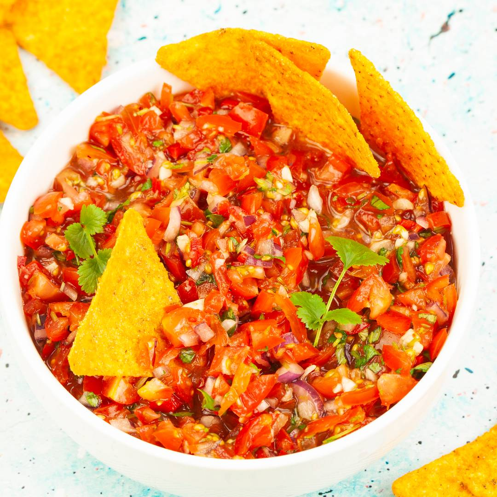

Home
Sałatkosos Salsa

Opis
Sos salsa jest sosem specjalnie strawnym swłaszcza że składniki są sajebiste
Rozpopularyzował się wszędzie tam, gdzie mógł, a zaczął w Meksyku
Składniki:
- pomidory
- cebula posiekana bardzo drobno
- czosnek posiekany bardzo drobno
- kolendra
- papryczka chili
- sól, pieprz nie za mało
Z proporcjami składników eksperymentować
Proces tworzenia:
- Wszystko kroimy, siekamy i dokładnie mieszamy.
- Odstawiamy do lodówki na 30 min. celem przegryzienia się mieszaniny. Odgradzamy zapach sałatkososu od zapachu lodówki.
- Po upływie 30 min. wyciągamy z lodówki i Voilà! Gotowe!